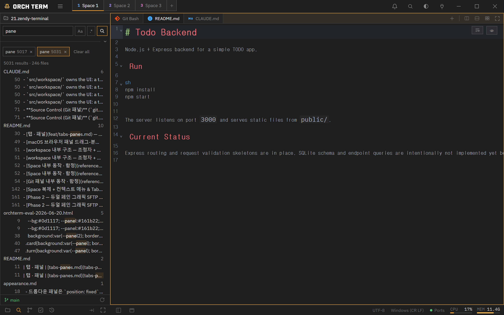
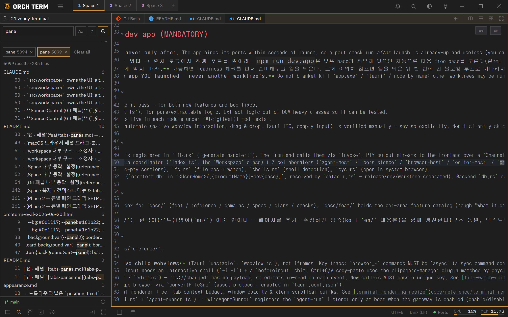

Core features · Full-text search
Full-text search
Search the contents of every file under the active project root at once. It supports plain text, regex, and case sensitivity plus include/exclude globs, automatically follows .gitignore, and fills in results live as they arrive.
Open — Ctrl+Shift+F
Ctrl+Shift+F switches the sidebar to the Search view (you can also move directly between Files · Search · Git in the mode bar below the sidebar). Type a query and press Enter or the magnifier to start. Turn on case sensitivity with Aa and regex with .*; when regex is off, your input is matched literally.

Aa·.* toggles, plus include/exclude glob in the detailed options. ② Per-file groups + per-line matches — click a highlight to jump to the editor.include / exclude glob · ignore rules
Expand the detailed options (the toggle) to reveal include and exclude globs (comma-separated for multiple) and an Include .gitignore-ignored checkbox. If include is empty, only .gitignore applies; but once you add even one include, it becomes a whitelist that searches only files matching those globs, and exclude removes files from within that set. Even if you collapse the detailed options, the inputs and filters still apply.
include=*.ts, exclude=*.test.ts → all .ts files except .test.ts. The result scope differs from when include is empty, so take care.By default, files listed in .gitignore and .ignore, files over 5MB, and binary files are skipped (ignored folders like node_modules don't leak into results). Check Include .gitignore-ignored to turn off all ignore rules and search everything.
Streaming, accumulating results tab
When you start a search, a new tab appears with a ⟳ and results accumulate per file and per line as they come in. The ⟳ disappears when it's done. Each tab preserves the search conditions from that moment, so you can run several searches at once and keep each in its own tab. Closing an in-progress tab with × stops it, and Clear all () wipes every tab at once. If there are too many results and the cap is reached, the search stops and a truncated banner is attached.
Click a match → jump to the editor
Click a result line to open that file in an editor tab, scroll to the line/column, and select the match. For the same file, an already-open tab is reused.

Search-only (no replace)
Full-text search is search-only — it doesn't support replace. Use Ctrl+Shift+F (this search) for "where is it" across the whole project, and the editor's Ctrl+F for "find and replace" within a single open file.
Per-Space isolation
Search tabs, results, queries, and options (Aa/.*/include/exclude) are independent per Space.
- Not shared with other Spaces — when you come back, the search state for that Space is restored.
- In-progress searches keep running in the background — they keep accumulating even after you leave the Space, and the view is only redrawn when it's active.
- Results are memory-only — there's no persistence, so a restart or a new Space starts empty.
Keyboard shortcuts
| Key | Action |
|---|---|
| Ctrl+Shift+F | Open the Search view |
| Enter | Run the search |
Aa | Toggle case sensitivity |
.* | Toggle regex |
| Ctrl+F | Single-file find/replace (editor) |